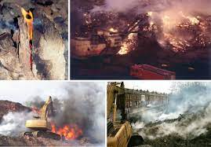

Hazards Of Mining
==>Have you ever wondered about the efforts the miners make in making life comfortable
for you? What are the impacts of mining on
the health of the miners and the environment?
The dust and noxious fumes inhaled by
miners make them vulnerable to pulmonary
diseases.
==>The risk of collapsing mine roofs,
inundation and fires in coalmines are a
constant threat to miners.
==>The water sources in the region get
contaminated due to mining.
==>Dumping of waste
and slurry leads to degradation of land, soil,
and increase in stream and river pollution.
